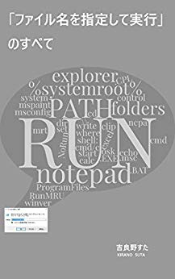
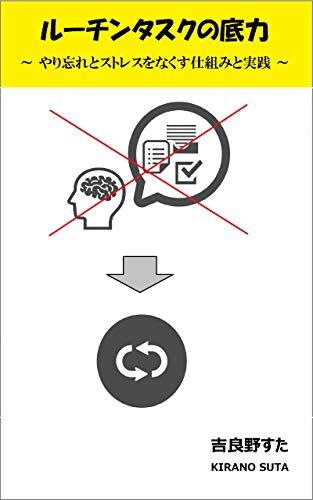

制作物(書籍・記事)¶
電子書籍¶
「ファイル名を指定して実行」のすべて¶

Amazon.co.jp： 「ファイル名を指定して実行」のすべて
Windows の「ファイル名を指定して実行」について、実用的なテクニックから知られざる小ネタまでカバーした一冊です。
Windows をもっと便利に使いたい方、操作効率を上げて仕事をスピードアップしたい方、Windows の仕組みや考え方を知りたい方、小ネタを集めたい方など、初心者から上級者まで幅広くお読みいただけます。
ルーチンタスクの底力 ～やり忘れとストレスをなくす仕組みと実践～¶

Amazon.co.jp： ルーチンタスクの底力: やり忘れとストレスをなくす仕組みと実践
タスク管理について解説した本です。仕事や私生活は多数のルーチンワーク（繰り返し行う「決まりきった作業」）から成りますが、これを「ルーチンタスク」という単位で捉えて管理する「ルーチンタスク管理」という考え方・手法について紹介しています。
タスク管理の初心者あるいは未経験者の方でも読み進められるよう平易な解説を心がけ、また実際に手を動かしていただく演習も用意しています。
ルーチンワークに忙殺されている方からやり忘れとストレスをなくすことを目指します。
執筆を効率化したい人のための秀丸エディタ実践入門¶
Amazon.co.jp： 執筆を効率化したい人のための秀丸エディタ実践入門
「執筆効率を高めるには基礎が必要」という視点で解説した、秀丸エディタの入門書です。既に何らかのエディタで執筆している方を対象にしています。
一段上の執筆ライフを手に入れたい方。「とりあえず」や「なんとなく」でも効率化してみたい方。秀丸エディタの多機能さを前に重たい腰が上がらない方。既に別の手段を使っているけど、もっと効率的な手段やアイデアについて知りたい方――そんなあなたに贈る、ありそうでなかった実践ガイドです。
ブログなど¶
- 2017/09/14 stamemo
- ソフトウェア技術や仕事術に関して調べたこと、試したこと、つくったもの、考えたことなどを雑多に記した備忘録
- マニアック度: 中～高
- 更新頻度: 低～中
- 2018/07/03 タスク管理に恋してる
- タスク管理に関する各種概念、理論、ツールなどについて調べたり試したり考えたりして楽しんでいるブログ
- マニアック度: 高
- 更新頻度: 低
- 2018/10/27 ストレスフリーなソロ充ライフ
- ストレスフリーガチ勢を掲げ、ソロ充・毎日定時退社・多趣味などを主軸にした雑記ブログ
- マニアック度: 低
- 更新頻度: 低～中
- 2019/01/28 効率鬼
- 仕事のやり方、捉え方から道具の使い方まで、ストイックに効率化を追求した備忘録
- マニアック度: 高
- 2019/03/15 更新停止中
- 2019/02/23 Monolithic
- タスク管理、効率論、Soloism など持論について文書化を試みたウェブサイト
- マニアック度: 中～高
- 更新頻度: 中～高
主な記事¶
Qiita¶
バズったもの:
- ビジネスホテルで一人開発合宿する - Qiita
- 2019/02/11 現在: 343 いいね、40000 view
- はてなブックマーク は 372 users
- ベアプログラミングが無理ならサイレントベアプログラミングを検討しよう - Qiita
- 2019/02/11 現在で 116 いいね
- はてなブックマーク は 24 users
反応の良いもの:
- てっとり早く Windows を使いやすくする定番ツール集 - Qiita
- 2019/02/11 現在で 116 いいね、20000 view
- バッチファイルでよく使う書き方まとめ - Qiita
- 2019/02/11 現在で 44 いいね、55000 view
- タスク管理メソッド todo.txt が面白そう - Qiita
- 2019/02/11 現在で 72 いいね、13000 view
- 「PATH を通す」の意味をできるだけわかりやすく説明する試み - Qiita
- 2019/02/11 現在で 45 いいね、11000 view
- 半角英数字記号と全角英数字かなカナ記号の一覧まとめ - Qiita
- 2019/02/11 現在で 19 いいね、85000 view
ブログ¶
アクセス解析で上位に入っている記事:
- stamemo
- ストレスフリーなソロ充ライフ
参加レポート: